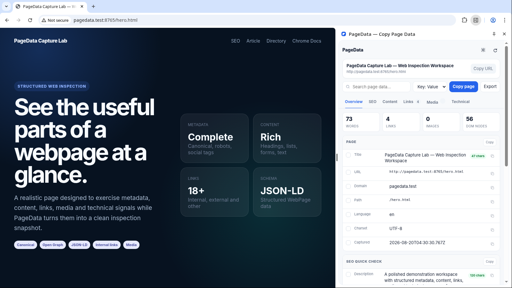
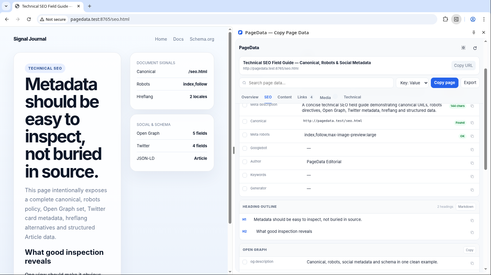
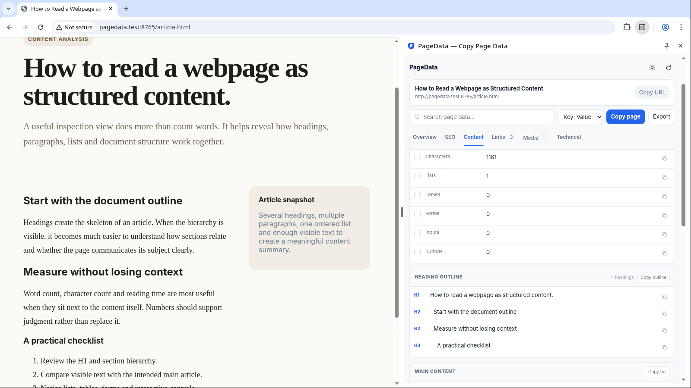
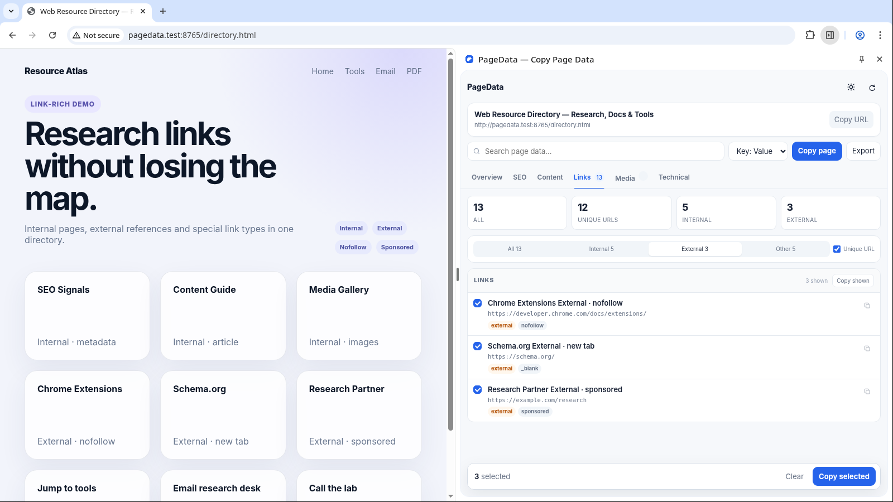
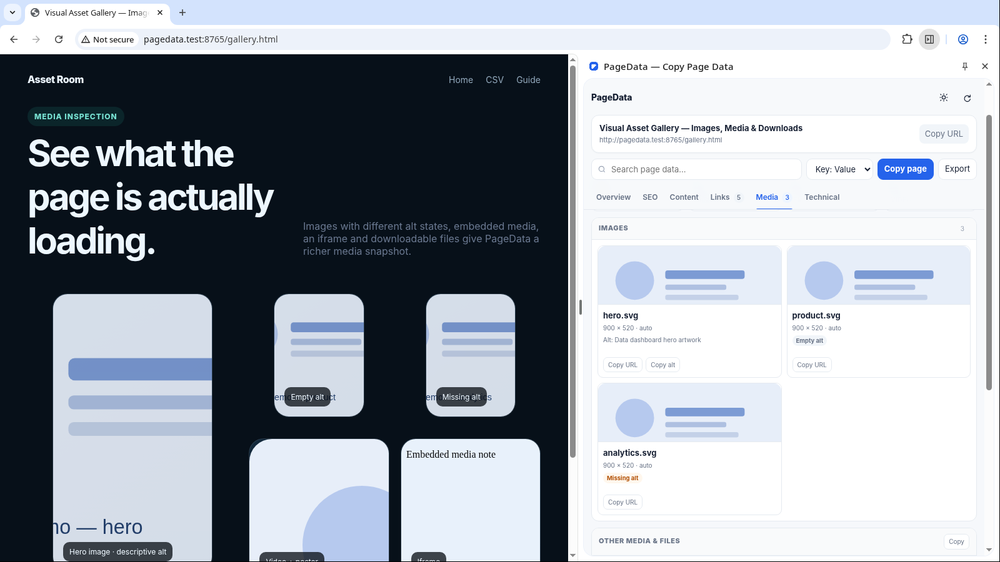
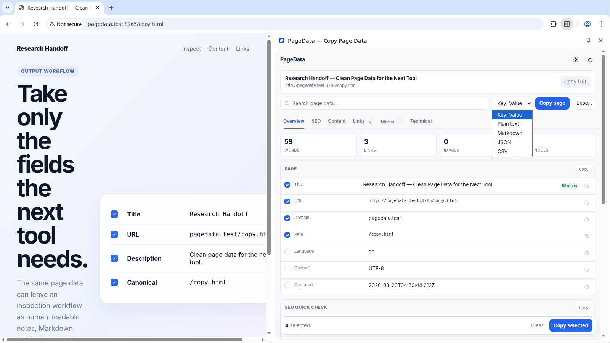
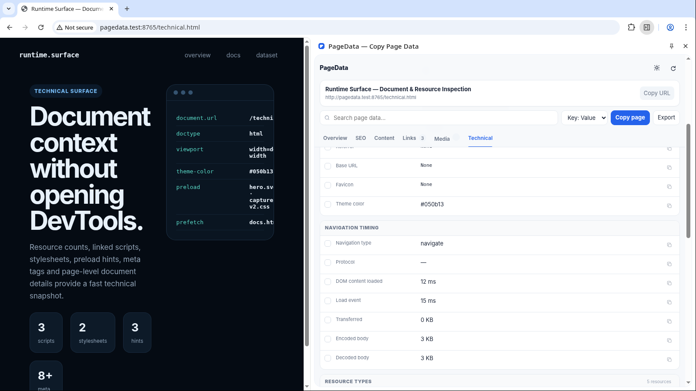

OVERVIEW
Page essentials
Title, full URL, domain, path, language, charset, capture time, word count, link count, image count, DOM size, and quick page-level context.
PageData inspects the current webpage from a focused Chrome Side Panel and organizes the useful parts for you — metadata, SEO signals, content structure, links, media, technical details, and copy-ready output in multiple formats.
Built for Chrome 114+ · No backend · No analytics · Inspected data stays in the browser.

PageData groups different kinds of page information into focused views so you can move quickly between a high-level overview and the exact details you need.
Title, full URL, domain, path, language, charset, capture time, word count, link count, image count, DOM size, and quick page-level context.
Inspect title, description, canonical, robots, headings, Open Graph, Twitter/X card data, hreflang entries, and JSON-LD detected in the document.
Measure words, characters, estimated reading time, paragraphs, lists, tables, forms, inputs, buttons, main content text, and visible page text.
Filter internal, external and other links; remove duplicate URLs; inspect anchor text, rel flags, targets, downloads, and copy selected link data.
Browse image URLs, dimensions and alt states alongside videos, audio, iframes and common downloadable file links found on the page.
Review document details, navigation timing, resource-type counts, scripts, stylesheets, preload/prefetch hints and the page’s full meta-tag collection.
PageData is not designed to become another dashboard you have to manage. It stays beside the page, surfaces the current snapshot, and helps you move that data somewhere useful with as little friction as possible.
The extension uses Chrome Side Panel, so the webpage stays visible while its structured data appears next to it. Reloads, URL changes and rapid tab switches are handled by the scan lifecycle rather than leaving stale snapshots behind.
Use Overview for the big picture, SEO for metadata, Content for document structure, Links for URL extraction, Media for assets, or Technical for document and resource details.
Search within page data, switch link filters, turn unique URL mode on, and select only the fields or links relevant to the task instead of copying an oversized dump.
Choose Key: Value, plain text, Markdown, JSON or CSV. Copy a single field, multiple selected values, a filtered link set, or export the full inspection snapshot as JSON.
The Overview keeps the most useful page facts close. The SEO view expands that snapshot into metadata and document signals without forcing you to inspect source code manually.
Title, URL, domain, path, language, charset and capture context stay easy to copy individually.
Inspect title, meta description, canonical and robots values in one place.
See H1 through H6 entries and quickly identify the page’s outline.
Review Open Graph, Twitter/X metadata, hreflang and JSON-LD detected in the document.

PageData treats content as more than a word count. It exposes the structure surrounding the text so research, QA and content review can start from a useful snapshot instead of manual counting.
Get lightweight size and reading estimates without copying the page into another tool first.
Paragraphs, lists, tables, forms, inputs and buttons help describe how the page is built.
Extract the primary content area when PageData can identify it from the document.
Copy the broader visible text when the task needs more than the main article or content region.

PageData separates link discovery from link cleanup. Filter the page’s anchors by relationship, remove duplicate URLs when needed, inspect attributes, and copy only the subset that belongs in your next step.
Move between link groups without manually comparing domains.
Collapse repeated destinations when a page contains the same URL in navigation, body content and footer areas.
Keep the text users see next to the URL it points to instead of losing context.
Inspect nofollow, sponsored, ugc, target blank and download behavior alongside each link.

The Media view turns image discovery into a compact asset inventory and keeps other embedded or downloadable resources close enough to inspect without opening DevTools or source code.
Browse discovered images visually while keeping their source URL available for copying.
See available image width and height information beside the asset.
Distinguish useful alt text, empty alt attributes and missing alt attributes.
Surface videos, audio, iframes and common downloadable files such as PDF, DOC, XLSX and ZIP links.

Choose the output that fits the next step: quick notes, Markdown, JSON, CSV or plain text. Copy one field, a focused selection, or export the complete inspection as JSON.

PageData is intentionally not a replacement for Chrome DevTools. The Technical view focuses on information that is frequently useful during inspection, QA and research, while keeping the workflow lightweight.
Doctype, viewport, language, charset and other document-level values.
See high-level counts by resource type rather than manually scanning network entries.
Collect script resource URLs found by the current page inspection.
Inspect stylesheet resources referenced by the document.
See resource hints that the page declares for loading behavior.
Review the broader meta collection beyond the most common SEO fields.

PageData stays deliberately general-purpose. The same inspection engine can support different workflows because the output is structured, filterable and easy to copy.
Check page titles, descriptions, canonicals, robots, headings, social metadata, hreflang and structured data without opening the source.
Capture page identity, content size, document outline and extractable text before moving the useful parts into notes, docs or AI workflows.
Turn a page full of anchors into a filtered internal, external or unique URL dataset with anchor context and rel attributes intact.
Review heading structure, image alt states, forms, resource hints and page-level counts while the original page remains visible beside the panel.
Locate image sources, embedded media and common downloadable files without manually hunting through markup or network requests.
Get a fast overview of document metadata, resource references and technical details before deciding whether deeper DevTools investigation is necessary.
PageData needs to read the webpage you ask it to inspect, but the current build does not send that inspected data to a backend service. Scanning, grouping and copy formatting happen locally in Chrome.
The extension reads the current DOM to build the inspection snapshot, then displays and formats that information locally.
The current build includes no analytics service, advertising SDK, remote script or backend integration.
chrome.storage.local is used for preferences such as the selected theme and copy format.
The active inspection snapshot stays in the Side Panel session and is not written to chrome.storage.local. A file is created only when you explicitly choose to export the current snapshot.
Pages such as chrome://... and protected Chrome Web Store surfaces cannot be scripted by extensions, and PageData respects that boundary.
A useful inspector should also explain where it cannot operate. PageData distinguishes normal webpages from protected browser surfaces instead of presenting a misleading empty scan.
PageData is designed to inspect standard HTTP and HTTPS pages. The Side Panel refreshes the snapshot as the active page changes and avoids stale results during navigation.
https://example.com/page
Chrome does not let extensions inject scripts into browser-internal pages or certain protected store surfaces. PageData detects those cases and shows a clear unavailable state.
chrome://... · Chrome Web Store
PageData turns the current page into a structured, copy-ready inspection without forcing you to dig through source code for everyday metadata, links, media and document details. For support, feedback or bug reports, contact the developer directly.